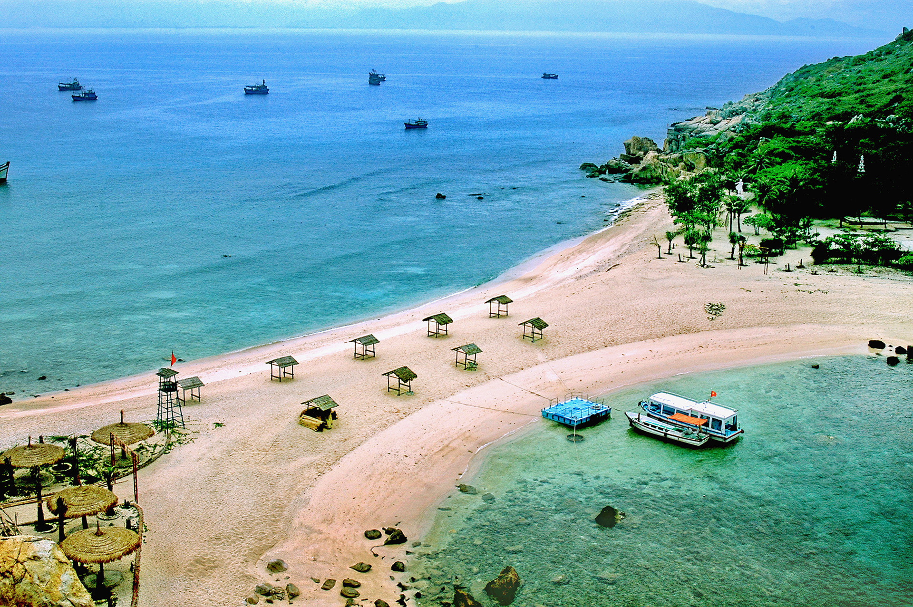

VẺ ĐẸP QUYẾN RŨ CỦA NHA TRANG
Việt Nam có hàng chục thành phố biển nhưng với tôi, Nha Trang (Khánh Hòa) là duy nhất. Mảnh đất này tựa người tình vĩnh cửu, khiến người đã gặp một lần là phải nhớ, phải thương. Nha Trang nơi tôi đã xin ra và lớn lên...
Tôi, một người sống ở Nha Trang hơn nửa cuộc đời tuổi trẻ và đã rong ruỗi khắp nẻo đường đất nước, nhưng cũng chẳng thể nào cưỡng nổi sức cuốn hút kỳ lạ của đại dương mênh mông.
BỮA TIỆC SẮC MÀU RỰC RỠ
Mỗi khoảnh khắc trong ngày, vùng đất này lại khoác lên mình một dáng vẻ khác nhau.
Vào mùa hè, thời điểm ngắm bình minh đẹp nhất là khoảng 5h. Giữa cảnh tranh tối, tranh sáng, cả đất trời như khoác lên mình chiếc áo mới. Sắc đỏ, cam, vàng hòa quyện vào nhau làm rực rỡ, sáng bừng không gian. Mặt Trời tựa khối cầu lửa tròn trịa ban phát những tia nắng lấp lánh.
Đôi khi, nếu may mắn, bạn có thể thấy những áng mây hình vây cá lung linh, huyền ảo làm đắm say lòng người. Còn vào mùa mưa, không thấy rõ Mặt Trời nhưng bạn có thể chứng kiến cảnh những tia nắng xuyên mây kỳ ảo.

Dường như, Nha Trang lúc nào cũng đẹp. Hoàng hôn mơ màng, mặt biển tựa tấm thảm mềm mại và óng ánh. Tiếng sóng xô bờ như đang hát khúc tình ca. Ngay cả khi đêm xuống, thành phố vẫn toát lên vẻ độc đáo với hàng nghìn ánh đèn lung linh.
THÀNH PHỐ SÔI ĐỘNG
Nhưng là sáng sớm hay chiều buông, Nha Trang luôn mang vẻ trẻ trung đầy năng lượng. Quanh các bãi biển, du khách và người dân đắm mình trong dòng nước mát. Một số tranh thủ chơi thể thao hoặc tận hưởng không gian bao la.
Những ai thích cảm giác mạnh có thể thử dù bay, trải nghiệm cảm giác "vươn tay là có thể chạm đến mây trời". Sau khi buộc dây an toàn, cano sẽ đưa họ bay lên. Từ trên cao, du khách có thể ngắm toàn thành phố.
Nếu ưa chinh phục tốc độ, bạn có thể chọn motor nước hay thử thách bản thân với trò flyboard mới du nhập vào Việt Nam. Nhưng với riêng tôi, các tour lặn biển là hoạt động không thể bỏ qua.
Thâm nhập vào thế giới dưới làn nước trong xanh, cảnh thủy cung huyền diệu trước nay chỉ xuất hiện trên tivi hiện ra trước mặt. Thảm hải quỳ mượt như nhung rập rờn theo sóng biển. Đàn cá hàng nghìn con quần tụ khoe sắc màu. Những con ốc náu mình dưới cát mịn.
Ngoài thể thao mạo hiểm, du khách có thể tham quan Viện Hải dương học, Dốc Lết, mũi Đại Lãnh, hòn Mun, hòn Tre, hòn Tằm hay đến các đảo Bình Ba, Bình Lập, Bình Hưng và Điệp Sơn. Tuy nhiên, bạn đừng quên khám phá nét văn hóa truyền thống vẫn được lưu giữ đâu đây trong khắp thành phố hiện đại như nhà thờ Đá, tháp Bà Ponaga hay chùa Long Sơn.
Cuộc sống về đêm tại Nha Trang sôi động chẳng kém TP.HCM. Hàng loạt câu lạc bộ, beer club, acoustic bar... mọc lên và mang đến nhiều thú vị. Trong bối cảnh lượng khách quốc tế ngày càng tăng, các hoạt động vui chơi sẽ còn phát triển và mở rộng.
NGƯỜI NHA TRANG GIẢN DỊ VÀ PHÓNG KHOÁNG
Không kín đáo như người Hà Nội, chẳng cầu kỳ như người Huế và cũng không tất bật như người Sài Gòn, người nha Trang bao đời gắn với đồng ruộng, biển khơi nên bản tính cũng mộc mạc và chân chất. Dường như không khí êm dịu nơi núi rừng và biển khơi giao hòa khiến lòng họ cũng trở nên phóng khoáng quá đỗi. Tất cả như thể đã trở thành nét riêng của người dân xứ này, nhìn là nhận ra ngay.
Người Nha Trang là thế. Họ đơn giản, không cầu kỳ. Họ có gì cũng nói thẳng, thể hiện đúng chất người miền Trung, chẳng vòng vo dông dài, cứ đơn giản mà nói, có sao nói vậy.
Tuy nhiên, những câu nói của họ không khiến người nghe cảm thấy cộc cằn. Âm ngữ nơi đây nhè nhẹ, ngọt ngào như giọng Nam Bộ nhưng lại đậm chất dễ thương của người miền Trung khiến người ta phải nhớ, phải thương.
Nguồn: Zing.vn